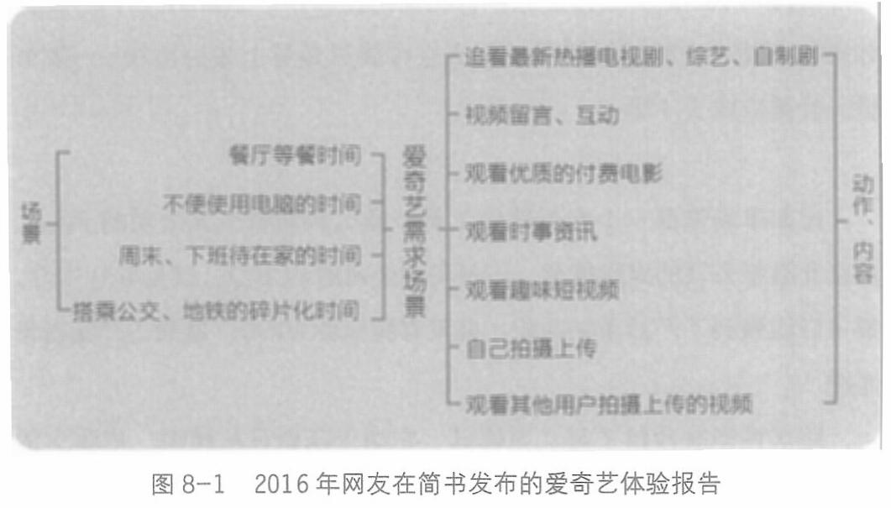

2016年，一个网友整理了他对爱奇艺的需求场景(见图 仅仅几年之后，我们看到，大量场景都被抖音、快手、微信视频号吃掉了。

长视频要死守的最后一个场景，可能是吃饭时的伴饭剧，因为这时候两只手在吃饭，没办法刷短视频、打游戏。
产品的竞争，并不是大手一挥，天下归心，而是一个场景一个场景地具体运作，在每个场景里步步为营、步步逼近。
每一个产品，拿下一个场景，才在现实世界里踩下了一脚，有了立足之地。
像微信这么强悍的基础设施，依然有钉钉和陌陌作为其竞争对手。钉钉占据的是工作的刚性关系场景，而陌陌占据的则是陌生人社交场景，这让它们各自成了独角兽。
我们需要不断深化对用户场景的理解，这是对用户的生活/工作的具体化认识。
236